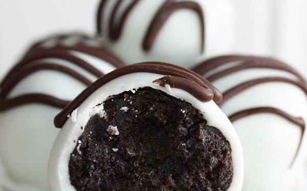

Oreo Truffles Recipe

What are Oreo Truffles?
Oreo truffles are a delicious and easy-to-make dessert sure to delight at your next event.
With only three ingredients and minimal equipment required, anyone can make this wonderful
sweet treat! See below for how to make oreo truffles.
How to Make Oreo Truffles
Prep Time: 25 minutes
Makes: Approximately 36 truffles
Ingredients
- 1 package of regular oreos
- 1 block of cream cheese, softened
- 16oz vanilla candy melts or almond bark
Instructions
- Line a baking sheet with parchment paper.
- Crush the entire package of oreos. You can do this in a food processor or by placing all
of the cookies into a Ziploc bag and crushing them with a rolling pin.
- Put the crushed oreos and softened cream cheese in a medium bowl and mix until combined.
- Roll about 1 TBSP of the mixture into a ball and place onto the baking sheet. Each ball should
be around 1 inch in diameter. Repeat until the mixture is gone.
- Place the baking sheet in the freezer for at least 15 minutes to allow the truffles to solidify.
This will make it much easier to dip them in the candy coating.
- Meanwhile, melt the candy melts according to the package instructions.
- When the truffles are ready, dip each into the candy melt before placing back on the baking sheet.
You can decorate them as desired with sprinkles, extra cookie crumbs, or colored candy melt.
- After the candy melt has solidified, transfer to an air-tight container and store in the fridge for up to a week,
or in the freezer for up to three months. Enjoy!
Return to Home